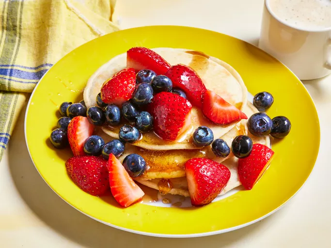

Pancakes

Quick, easy, and tasty macaroni and cheese dish. Fancy, designer mac and cheese often costs forty or fifty dollars to prepare when you have so many expensive cheeses, but they aren't always the best tasting. This simple recipe is cheap and tasty.
Ingredients
- 1 (8 ounce) box elbow macaroni
- ¼ cup butter
- ¼ cup all-purpose flour
- ½ teaspoon salt
- ground black pepper to taste
- 2 cups milk
- 2 cups shredded Cheddar cheese
Steps
- Step 1: Boil Macaroni
Bring a pot of water to a boil. Cook elbow macaroni until al dente, about 8 minutes.
- Step 2: Make a Roux
While the macaroni is cooking, go ahead and start on the roux. A roux is a thickening agent made of one part fat and one part flour that makes up the base of this creamy mac and cheese.
- Step 3: Add Cheese and Macaroni
Finally, the most crucial step: Add cheese! Slowly stir in Cheddar cheese until smooth and melted.